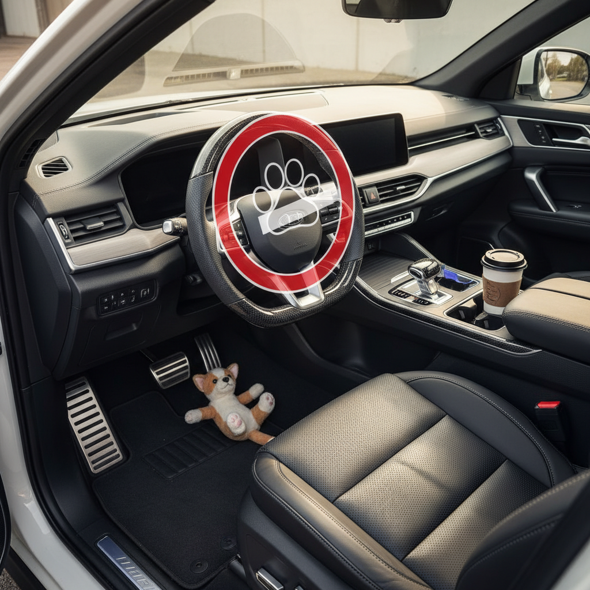
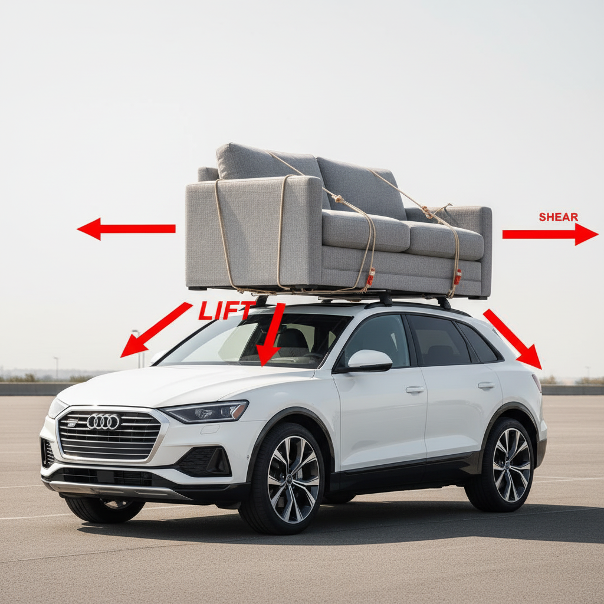
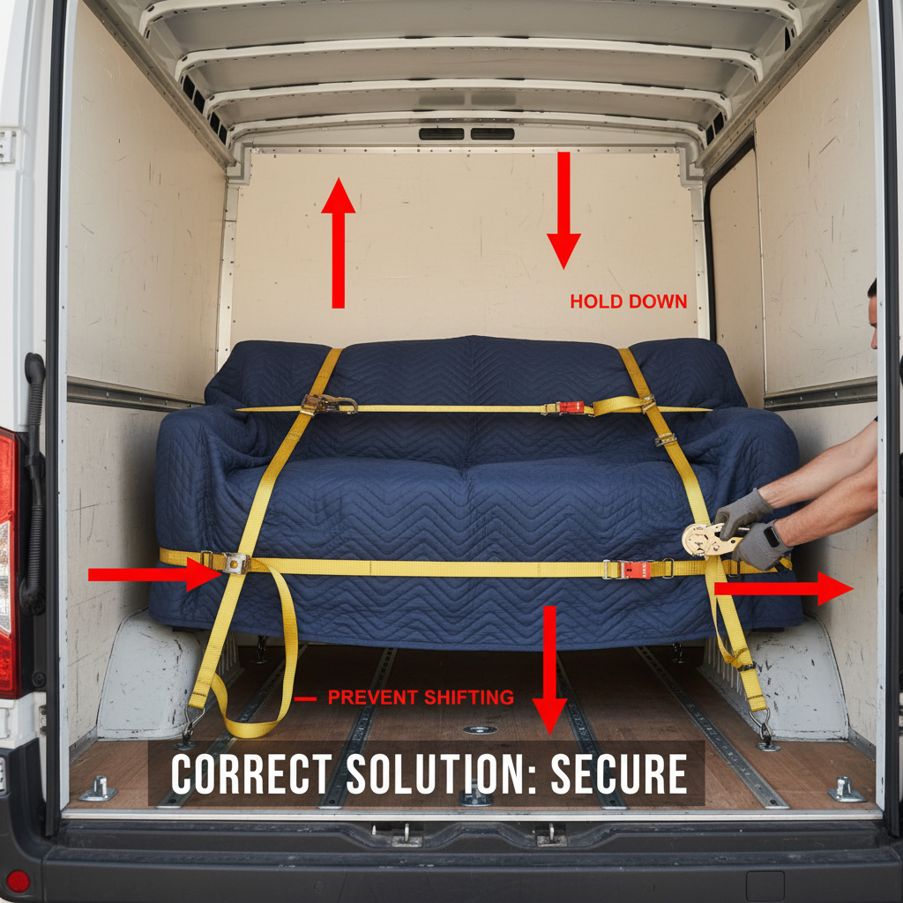

This document explains the severe, life-threatening risks and practical impossibilities of attempting to transport a sofa on an SUV operated by a cat. This is a safety advisory intended to prevent catastrophic accidents, animal cruelty, and property damage by outlining correct and safe furniture transportation methods.
⏱️ Estimated time: N/A
A domestic cat lacks the physical size, strength, dexterity, and cognitive understanding required to operate any motor vehicle. Placing a cat in the driver's seat is a guarantee of a total loss of control, resulting in a severe crash. It is also an act of animal cruelty. All vehicle controls are designed exclusively for human operators.
⏱️ Estimated time: N/A
Even with a human driver, securing a sofa to an SUV roof is extremely dangerous. The sofa's large surface area acts like a sail, creating aerodynamic lift that can tear the sofa from the car at speed. This turns the sofa into a deadly projectile for other vehicles. The high center of gravity also dramatically increases the risk of the SUV rolling over in a turn or high wind.
⏱️ Estimated time: 1 - 3 hours
The only safe way to transport a sofa is inside an appropriate vehicle. Your options are to hire a professional moving company, rent a moving truck or cargo van, or use a pickup truck if the sofa can be fully secured within the bed. This protects the furniture, your vehicle, and everyone else on the road.
